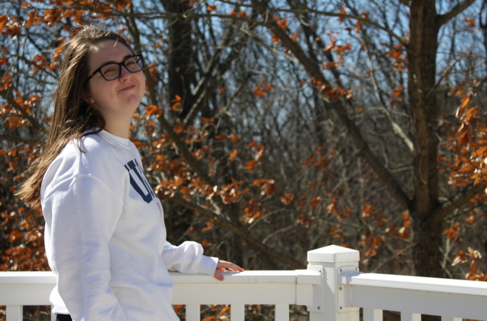

Welcome to my website! My name is Brynn Jankowski and I am a journalist specialized in social media and audience strategy studying at the University of Missouri- Columbia. I am equipped in understanding social media platforms such as Twitter, Instagram, TikTok, LinkedIn, and Facebook. I am also able to utilize analytics from a brand or newsroom’s website and social media accounts and apply SEO to reach audiences, old and new.
I like to stay up to date with trends and am eager to create new, innovative social media posts while using inside data to maximize what brands/newsrooms receive from being online.
Currently looking for an internship in summer 2022 to expand my experience and exercise new skills that allow people to effectively tell their stories and help brands thrive online.
Email 1: bmjcbx@umsystem.edu
Email 2: bmjanko1@gmail.com